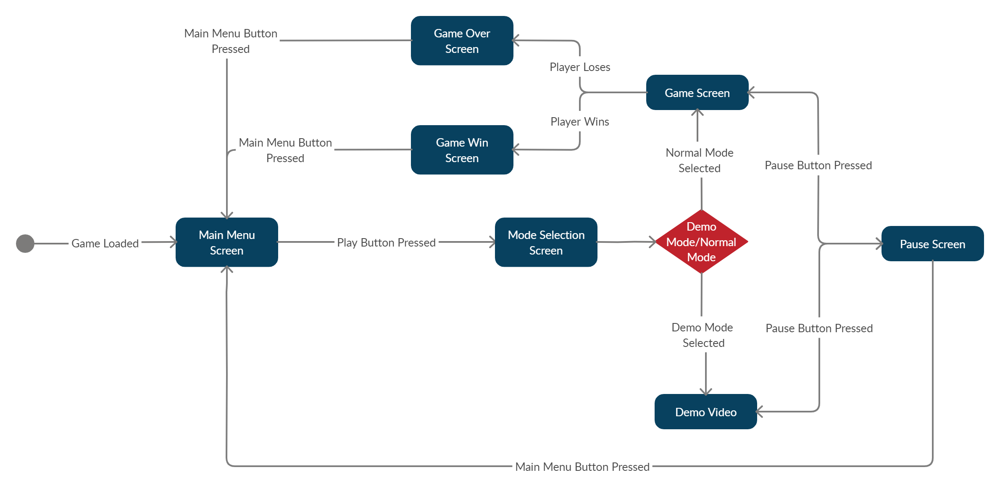
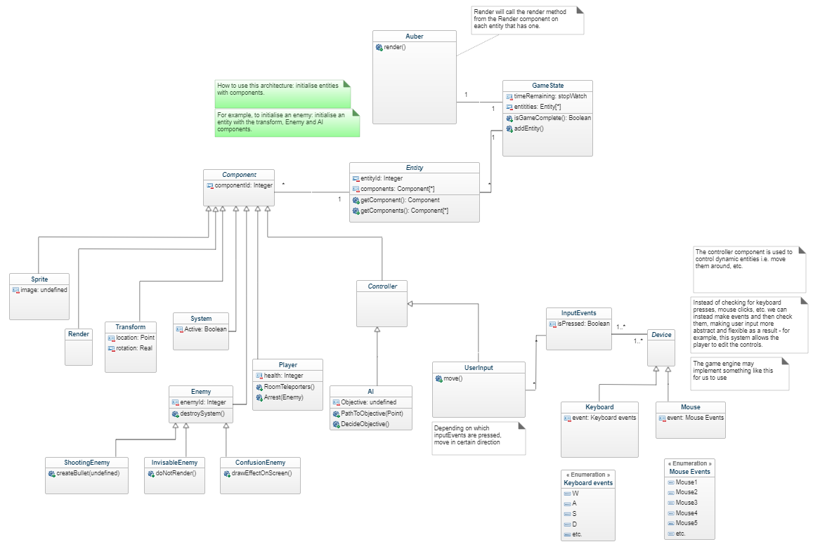
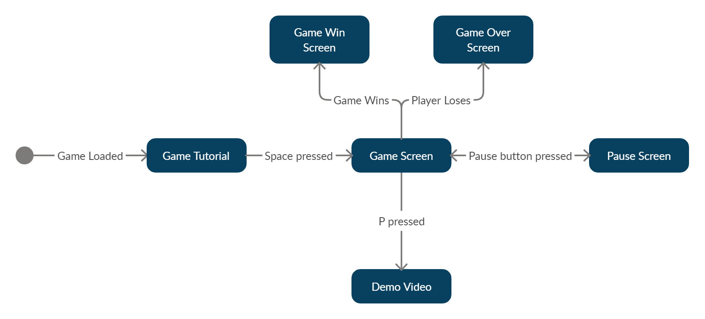
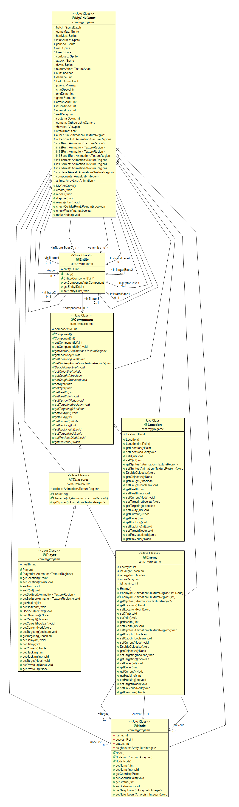

Architecture
To build an abstract and a concrete representation of the architecture, we used UML (Unified Modelling Language) - a standardized modelling language consisting of a set of diagrams, developed to help system and software developers for specifying, visualizing, and constructing the artifacts of software systems.
Abstract representation
1) Sequence diagram (abstract)
The aim of this diagram is to show how objects interact with each other in a particular scenario, namely, to represent an attempt of a player to arrest infiltrators or other such scenarios. During this time, we weren’t set on whether we could arrest the enemies while their ability is active.
2) State diagram (abstract)
This state diagram expresses the different states of the game, such as the main menu, mode selection screen, pause menu, and more. To construct the state diagram, we used a web diagramming tool known as Creately.
3) Class diagram (abstract)
We have used a UML(Unified Modelling Language) class diagram. We used it to represent the abstract architecture of the game and it was produced using GenMyModel.
We initially started our architecture design using large amounts of inheritance; after all, it seemed natural to have static and dynamic classes that inherited from an entity class - the static objects would be static and the dynamic objects would be dynamic. However, we soon started to run into issues. For example, when we started planning how the architecture would allow for different AI behaviour depending on the type of ability the enemy had. We would need to exchange information across different inheritance levels.
As a result (and with the help of the lectures), we switched to another type of architecture, the entity-component system. This would allow us to implement the behaviour we wanted within specialised components, making the implementation and maintenance of such code more manageable.
The more we looked into this type of architecture, the more it made sense. In this architecture, (almost) everything is an entity and then functionality can be added to them via components. Additionally, any component functionality that is dependent on other components can be implemented using the getComponent/getComponents functions on the entity class, allowing a component to get another if it is required for operation.
Regardless, this architecture model reduced the architectural complexity compared to our previous architecture.
Concrete representation
1) Sequence diagram (concrete)
2) State diagram (concrete)
3) Class diagram (concrete)
In the end, we used a hybrid architecture that combined parts of the entity-component system and the inheritance based model. We used the ObjectAid feature that is accessible using Eclipse to automatically generate a class diagram based on the code provided to it, we then edited this diagram to make it readable and saved it as a png.
Justification
In our Abstract architecture, we decided that we should first split the game into its separate parts which became our starting classes, these were the main class, entity class, player class and enemy class. We expanded on these to make our program more modular by separating out common features between classes into their own class and using inheritance to bring features down. This modularity allows us to use common code multiple times such as the character class which collects common features of enemies and the player as well as separating out the enemy class into the 3 unique types of enemy which inherit from the enemy class. We decided that the controller for all components should be separate from the actual class for that component, so we only needed to write code for movement once and can fit the module for it into any component that requires it.
The key changes we made between the class diagrams and how we implemented our code were that we merged several classes together that we initially thought would be more complex than they actually were because of the features provided by our game engine (libgdx). These features allowed us to compress our structure down into a simpler and easier to understand design, such as compressing the controllers for the player and enemy to their own classes rather than having a separate class to take inputs for them. We also converted many of the subclasses of the Component class from the Abstract class diagram into the main Auber class itself such as the systems and sprite information as these were required in more locations then we originally noticed. In our Concrete class diagram we also added a new class called Node which contained the information about the graph and allowed the Enemies AI to navigate through the map. The key layout of the Concrete and Abstract architectures remain the same only having the less critical subclasses combined such as enemies and unique enemies whilst the main class structure remains the same having built off the ideas decided in the Abstract class diagram.
In both the Concrete and the Abstract state diagrams, we decided to provide a tutorial screen to the user which provides key information that the player needs to know as well as the controls. Once in the game screen, you have the option to load the demo video by pressing “P”. This video shows a full game and demonstrates its features (UR_DEMO). The game enters the win screen if all imposters are arrested and goes to the lose screen if all systems are destroyed (UR_GAME_END).
In our Concrete architecture, we store the map as a PNG which contains multiple unique rooms such as the (brig, Kitchen, mess, bunks, armoury, infirmary, garden and cargo) (UR_ROOM_TYPES), These rooms are colour coded so that they are easily identifiable to the player, as well as having their names at the main entrances.
Scattered around the map we have 15 systems which can be sabotaged by the infiltrators (UR_SYSTEMS). Having the systems as images on the map and not as their own sprites is a change from the Abstract architecture as we decided it would be more effective to store the systems as nodes as they would never have to move and the infiltrators could just move to their known positions to sabotage them (UR_AI_SABOTAGE). We also decided to have the infiltrators move around on an invisible graph instead of having them being able to move freely as shown in the Abstract architecture as this meant we could move them along pre-set paths with a more simple algorithm to decide their next location to visit. This is an improvement over having them being able to move freely around the map as it ensures they cannot get stuck on walls and rooms and also means we can direct them more effectively.
In our Concrete and Abstract architecture, we decided that we should press a key to instantly teleport to the infirmary (UR_HEAL). Although in our Concrete architecture we also decided that a cooldown on this ability should be added so that users will still respect the damage that can be caused by the infiltrators, as well as meaning that the user is incentivise to not use the teleport as a mode of transportation instead of just to heal.
In our Concrete and Abstract architecture, we decided that we should implement 3 unique abilities (UR_AI_ABILITIES) which we decided should be confusion, where an effect appears over the user’s screen making it harder to navigate; invisibility, where the enemy’s sprite stops being shown; and breaking the teleporters temporarily. We also decided to add an “ability” that all infiltrators would have which did damage to players if they stood on top of them. We made this change as in our Abstract architecture we planned on having an infiltrator whose unique ability would be to attack the player, but we decided it would be more interesting to disable teleporters and so we added a passive damage ability to all enemies to add a level of risk to arresting them while on low health. This incentivised players to use the infirmary often to maintain their health.
Originally in our Abstract architecture we thought we would make a notification for a room’s sabotage by making an effect for the corresponding room appear on the screen, however in our Concrete architecture we decided to instead show a red light over a system to show it has been sabotaged followed by a grey light to show it has been destroyed (UR_NOTIFICATION). We did this because it was frustrating for a new player to navigate the map and locate the systems so we changed the way it worked, making it so the player could see the whole map including all infiltrators locations and system locations to make the game less confusing for new players.
The players can move over the infiltrators to arrest them and send them to the brig (UR_ARREST). It was decided to allow the player to be able to arrest enemies while their abilities were active as it was not fun being forced to follow an enemy while waiting for their ability to end. This is the same in both Concrete and Abstract architecture, except for that in the Concrete we decided that the user should be teleported to the brig along with the imposter so that the user has to make more trips around the map and meaning that they cannot arrest a large amount of the imposters very quickly and cause the game to end too early. The game runs in real time as both the Imposters and the players can move around the map smoothly (UR_REAL_TIME), this is the same in both architectures.
The final key change we made between the Concrete and the Abstract architectures was that each room teleporter is linked in a pair, meaning that instead of being able to cycle between all the rooms you instead got teleported to the other linked teleporter in the pair. This allows users to quickly identify where the teleporter will take them as well as reduce the need to use multiple teleporters in a row to get to the desired location while not making teleporters too powerful and normal map traversal redundant (UR_ROOM_TELEPORTERS).
Download a PDF file View a PDF file